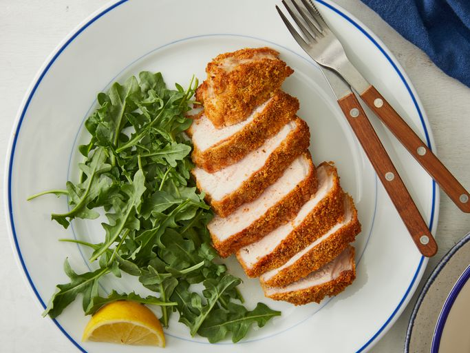
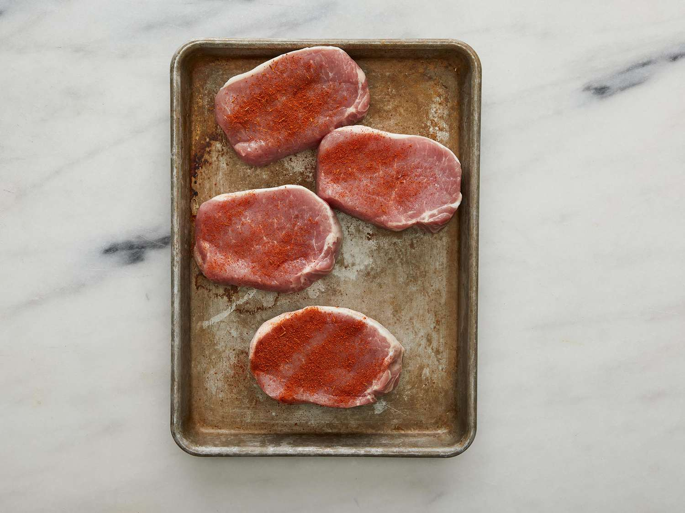
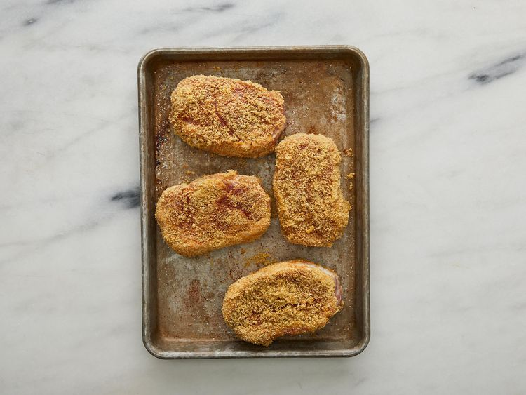
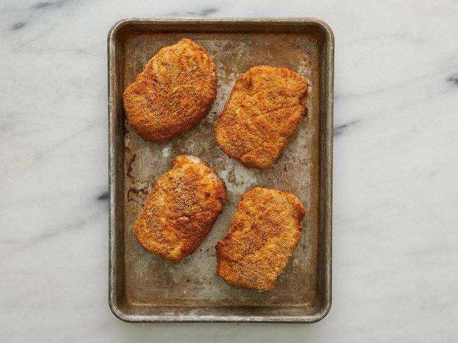

Home
Breaded Air Fryer Pork Chops

Deliciously crispy breaded pork chops made by air fryer.
Ingredients
- 4 (5 ounce) boneless, center-cut pork chops, 1-inch thick
- 1 teaspoon Cajun seasoning
- 1 ½ cups cheese and garlic croutons
- 2 large eggs
- cooking spray
Steps
- Preheat an air fryer to 400 degrees F (200 degrees C).
- Place pork chops on a plate and season both sides with Cajun seasoning.

- Pulse croutons in a small food processor until fine; transfer to a shallow dish. Lightly beat eggs in a
separate shallow dish. Working one at a time, dip pork chops into beaten egg, letting excess drip off; press
into crouton breading to coat both sides and place breaded chop, unstacked, onto a plate. Repeat with
remaining chops. Mist chops with cooking spray.

- Spray the air fryer basket with cooking spray and arrange chops in a single layer in the air fryer basket.
You may have to do two batches depending on the size of your air fryer.
- Cook in the preheated air fryer for 5 minutes; flip chops and mist again with cooking spray if there are dry
areas. Cook 5 minutes more. An instant-read thermometer inserted into the center of the chops should read
145 degrees F (63 degrees C).

- Serve hot and enjoy!